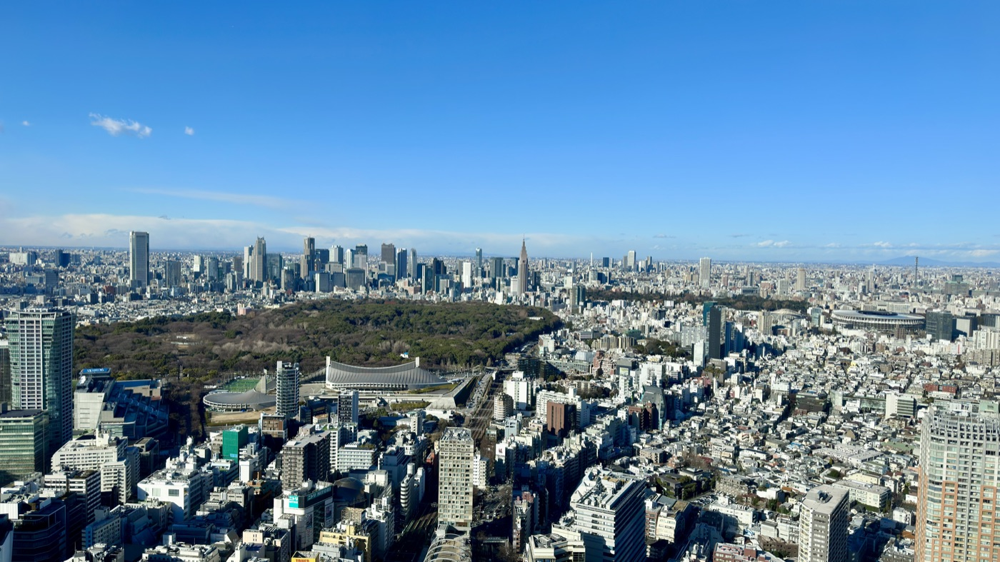
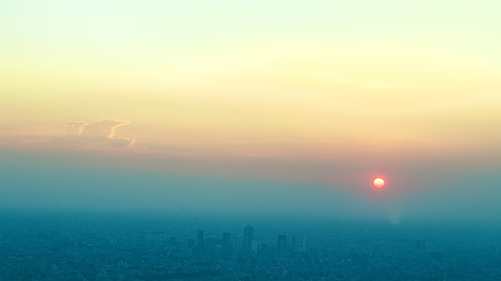
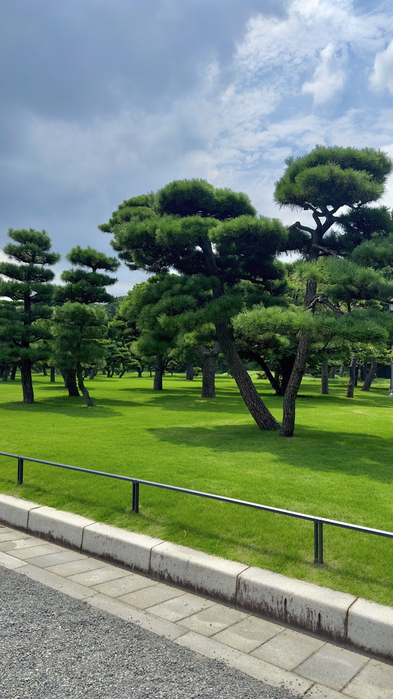
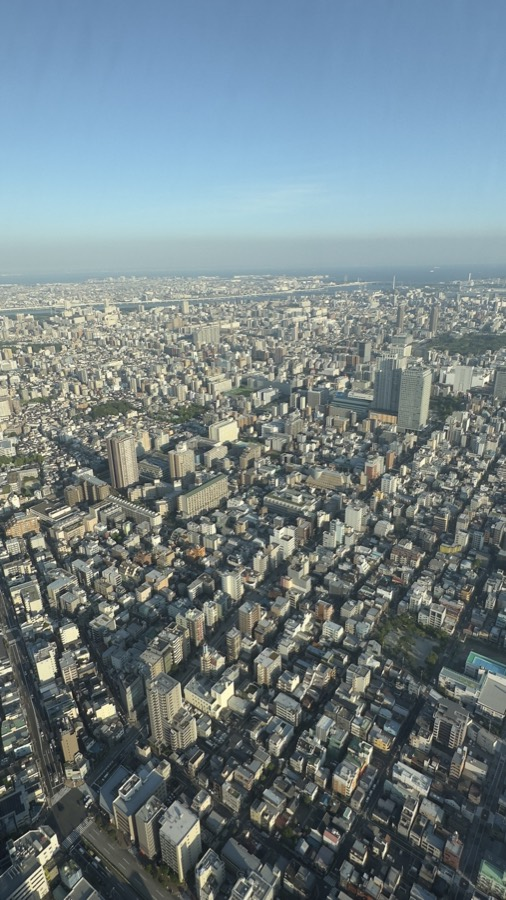

17:30 권장
김포공항 국제선 터미널 도착
대한항공 체크인 및 수하물 위탁. 출발 약 2시간 전 공항 도착을 기준으로 설정.



이번 여행에서 반복해서 오갈 거점을 한눈에 이해하기 위한 개요 지도
두 숙소를 중심으로 스미다강과 동쪽 도쿄 산책
도쿄국제영화제 · 영화관 · 서점 · 카페
국립영화아카이브 · 영화와 점심 동선
10월 30일 저녁 이후 클럽 방문
향후 일정 후보 · 사진과 산책, 독립서점




대한항공 체크인 및 수하물 위탁. 출발 약 2시간 전 공항 도착을 기준으로 설정.
하네다공항 제3터미널 도착. 일본 현지시각 기준.
Visit Japan Web QR 준비. 실제 수속 완료 시각에 따라 이후 교통편 결정.
하네다 제3터미널에서 게이큐선 탑승 → 센가쿠지(泉岳寺)를 거쳐 도에이 아사쿠사선으로 직통 운행. 23:09 마지막 직통편을 놓치면 23:37 출발의 환승 경로를 이용할 수 있어.
평일 시간표 기준: 마지막 직통 23:09→23:54 · 최종 환승 경로 23:37→00:23(익일)5-6-10 Asakusa, Taito-ku, Tokyo 111-0032. 아사쿠사역에서 도보 이동.
이동 노선: 게이큐 공항선 → 도에이 아사쿠사선 직통(열차에 따라 센가쿠지 환승).
이동 시간: 직통 약 41~45분 · 최종 환승 경로 약 46분.
일반 운임: IC 약 ¥599 / 승차권 약 ¥610.
평일 마지막 직통: 23:09 출발 → 23:54 아사쿠사 도착.
평일 최종 환승 경로: 23:37 출발 → 00:23 아사쿠사 도착(다음 날).
숙소까지: 아사쿠사역에서 도보 이동 추가.
※ 마지막 직통과 환승 경로는 현재 공개된 평일 시간표 기준. 2026년 10월 29일 실제 운행은 변동될 수 있어 출발 직전 재확인. 00:08 시나가와행 막차는 아사쿠사까지의 연결을 보장하지 않으므로 제외했어.
료고쿠의 호텔에 짐을 맡기고 영화제 현장으로 이동할 수 있도록 오전 동선을 여유 있게 잡기.
시간은 추천안Crevia Asakusa → THE GATE HOTEL RYOGOKU. 이동과 프런트에 짐 맡기는 시간을 포함한 여유 구간.
숙박객은 체크인 전 프런트에서 짐 보관 가능JR 료고쿠역에서 아키하바라를 경유해 유라쿠초로 이동하는 경로를 우선 고려. 도착 후 카도카와 시네마 유라쿠초에서 티켓 확인.
09:50 전후 현장 도착 목표카도카와 시네마 유라쿠초 · 도쿄국제영화제 상영
공식 상영시간 112분 · 예상 티켓 ¥2,200히비야·유라쿠초 권역에서 점심 A/B안 중 선택. 남는 시간에 CREEK / 유린도 등 방문.
방문 후보는 페이지 하단에서 비교국립영화아카이브로 이동, 상영 전 입장 준비. 늦지 않도록 도보·철도 이동시간에 여유 확보.
국립영화아카이브 · 미조구치 겐지 특별전
공식 상영시간 85분 · 참고 티켓 ¥1,300영화 종료 후 유라쿠초 방면으로 이동. 친구의 도쿄 도착시간에 맞춰 합류 장소 결정.
합류 시각 미정가키아게 소바 등 가벼운 식사. 실제 저녁 장소는 아래에서 검토.
참고 예산 약 ¥800저녁 식사 후 신주쿠로 이동, 니초메 거리 산책과 클럽 방문.
할로윈 이벤트 방문 예정. 일정 및 입장 조건은 재확인.
참고 입장료 약 ¥3,800